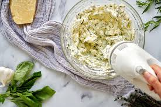

Garlic and Herb Profiteroles Filling

A Savory filling for a Profiteroles Appetizer
An appetizer worthy of a meal, we can use our Pate a choux recipe as a base for garlic and herb profiteroles.
Ingredients
- 1 cup heavy cream, cold
- 16 oz. cream cheese, room temperature
- 4 oz. unsalted butter, room temperature
- 2 tablespoon parmesan cheese, finely grated
- 2 cloves garlic, minced
- 3 tablespoons fresh dill, finely chopped
- 2 tablespoons chives, finely chopped
- 2 tablespoons parsley, finely chopped
- 1/2 teaspoon pepper
Steps
- Beat the filling ingredients in a large mixing bowl to soft peaks.
- Using a smaller piping tip, pipe your filling inside your pastry shells until full. Serve immediately.
Image credit: Proportional Plate
Recipe credit: Proportional Plate